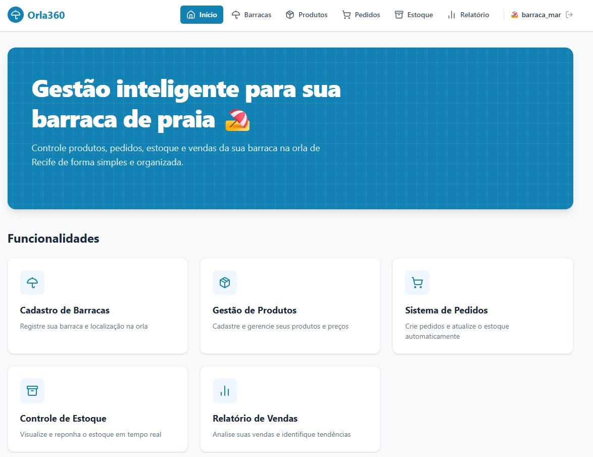
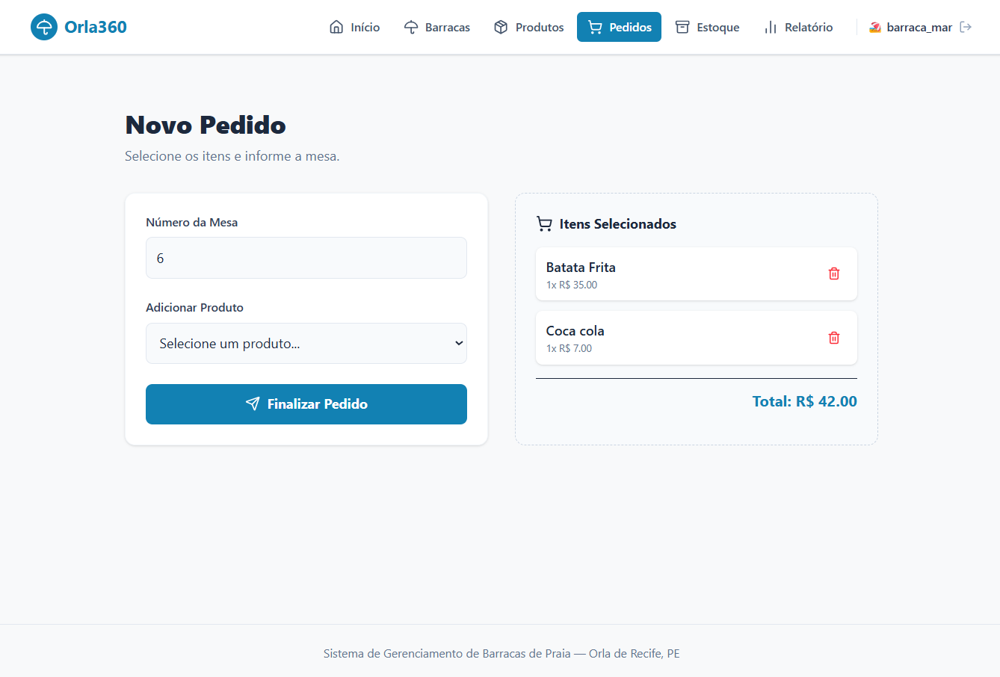
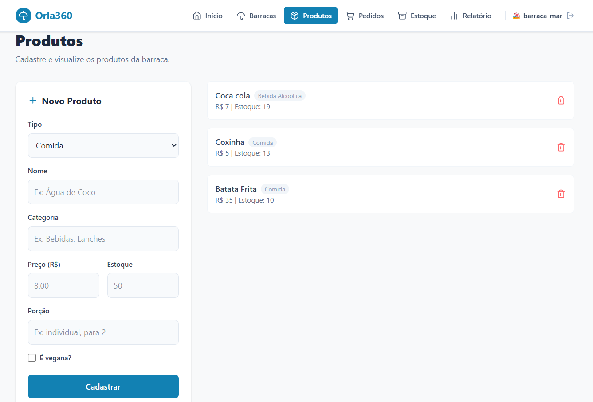
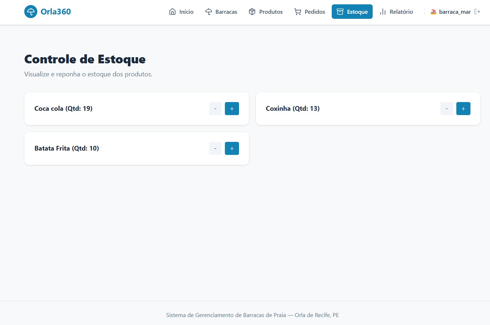

Conheça a Interface do Orla360

Dashboard principal com visão geral e acesso rápido.

Fluxo simplificado para criação e finalização de pedidos por mesa.

Cadastro completo de itens, preços e categorias.

Monitoramento e reposição de quantidades em tempo real.
O que é o Orla360?
O Orla360 é um sistema de informação robusto projetado especificamente para as necessidades logísticas e operacionais dos estabelecimentos da orla de Recife. Ele transforma a gestão manual de estoque, pedidos e faturamento em uma operação digital centralizada e ágil.
A aplicação foi construída dividindo as responsabilidades de forma clara: um backend robusto e tipado em C++ atuando como API REST local, persistido em SQLite3, e uma interface rica e responsiva em React com Tailwind CSS para o operador da barraca.
Tecnologias
- Backend C++
- Servidor HTTP cpp-httplib
- Banco de Dados SQLite3
- Frontend React + Vite
- Estilização Tailwind CSS
Funcionalidades do Ecossistema
Multibarracas & Autenticação
Isolamento de dados por estabelecimento através de rotas dedicadas de registro e login seguro.
Gestão de Cardápio (CRUD)
Controle total sobre produtos comercializados, divididos nativamente entre Comidas e Bebidas com propriedades específicas.
Fluxo de Pedidos em Real-Time
Criação, acompanhamento de status de preparo/entrega e cancelamento integrado à retaguarda da barraca.
Alertas de Estoque Crítico
Atualização automatizada de insumos a cada venda com gatilhos de aviso para produtos com quantidade abaixo do limite.
Inteligência de Vendas
Geração de relatórios com cálculo de faturamento bruto, identificação automatizada do item mais vendido e métricas de desempenho.
Conformidade e Local-First
Uso do SQLite garantindo privacidade total. Os dados financeiros e de estoque rodam localmente na máquina do cliente.
Implementação dos Conceitos de POO
Encapsulamento
Proteção de estados críticos do negócio usando atributos privados e acessores restritos em todas as entidades (Barraca, Pedido, Estoque).
Herança e Polimorfismo
Especialização da classe abstrata Produto em Bebida e Comida, sobrescrevendo métodos virtuais puros como toJson().
Padrão Singleton
Garantia de conexão única e centralizada com a base de dados SQLite através da instância restrita da classe Database.
Gerenciamento Dinâmico
Uso moderno de ponteiros inteligentes (unique_ptr) para evitar memory leaks na manipulação polimórfica de listas de produtos.
Uso Consciente de Inteligência Artificial
Em alinhamento com as diretrizes do Centro de Informática da UFPE, ferramentas de IA generativa foram integradas ao ciclo de desenvolvimento estritamente como co-pilotos de engenharia.
As principais frentes envolveram a aceleração de estudos sobre a integração de ponteiros C com wrappers C++, resolução de conflitos de tipos em compilação multiplataforma e validação estrutural do padrão de projeto adotado na camada de persistência.